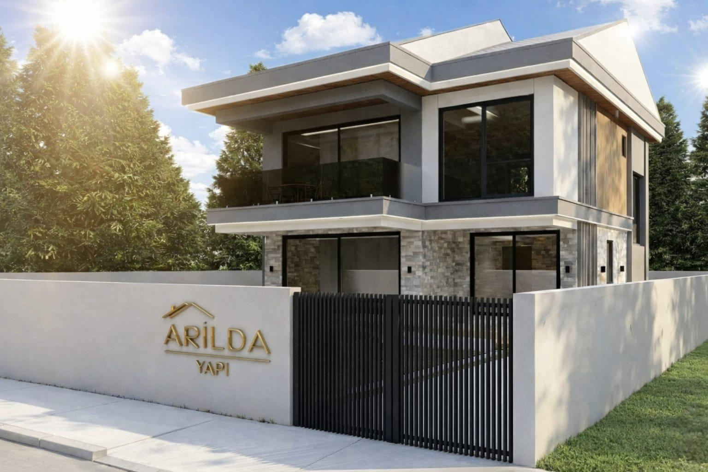
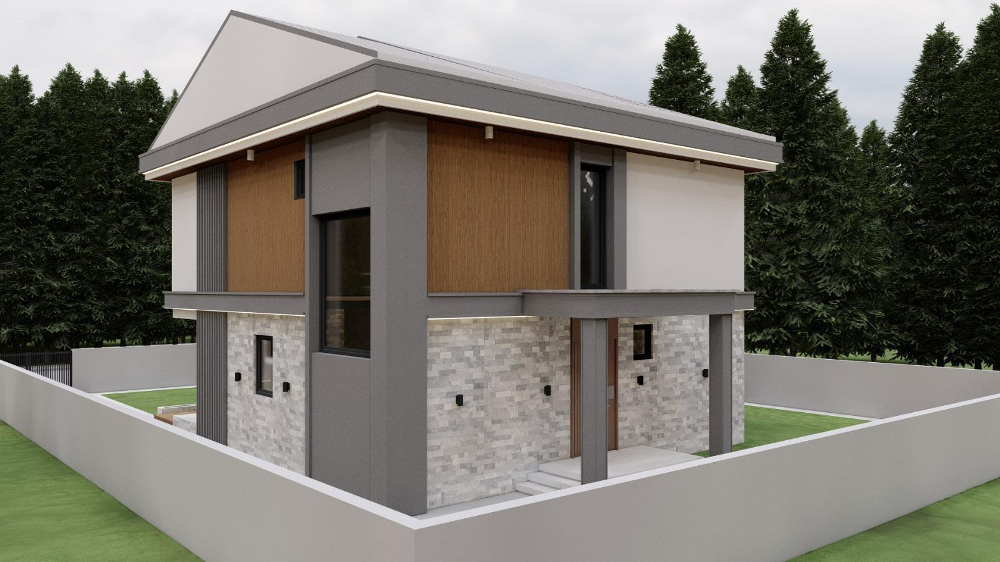

Gelişmiş mühendislik ve kusursuz işçilikle; binalarınızı, ofislerinizi ve yaşam alanlarınızı temelinden çatısına kadar yeniliyoruz. En ileri teknoloji yalıtım standartlarından, çağdaş mimari iç dekorasyona kadar tüm restorasyon ihtiyaçlarınız için anahtar teslim, garantili çözümler sunuyoruz.

Mevcut zayıf çatı karkasınızı söküyor, yerine uzun ömürlü çelik konstrüksiyon veya ithal emprenyeli ahşap sistemler kuruyoruz. Su, ısı ve ses yalıtımını maksimize eden premium çatı membranları ve panel kiremitler ile binanızın nefes almasını sağlıyoruz.

Uygulama öncesinde zeminin lazer tesviyesini hassasiyetle gerçekleştiriyoruz. Islak hacimlerde çift kompenantlı tam yalıtım sağlayarak, geniş ebatlı granit, mermer ve birinci sınıf parke döşemelerini estetik sıfır derz kalitesiyle uyguluyoruz.
Yapısal ömrünü tamamlamış veya risk barındıran projelere özel taşıyıcı demir, çelik ve karbon fiber güçlendirme sistemleri uyguluyoruz. Hem deprem güvenliği hem de modern büyük açıklıkların geçilmesine imkan veren çelik imalatlarını şantiyede milimetrik hassasiyetle monte ediyoruz.
Binanızın enerji kimlik belgesini A sınıfına yükseltecek XPS ve Taşyünü bazlı kompozit dış cephe sistemleri tasarlıyoruz. Nem itici sentetik boyalar ve dekoratif mineral sıvalarla binanızı zorlu hava koşullarına karşı garantili koruma kalkanına alıyoruz.